GitKraken es un asistente visual para Git que te ayuda a controlar tus proyectos de código, incluso si no eres un experto. Es como tener un compañero que te guía por el proceso.iente comando: git checkout
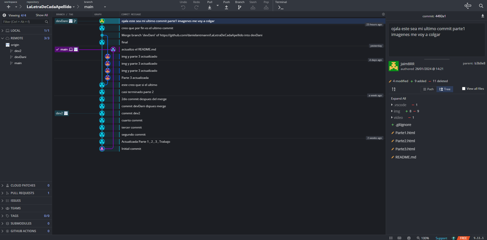
Dentro del proyecto en GitKraken al realizar cualquier cambio por minúsculo que sea podemos hacer un commit, para poder realizarlo es simple hay varias formas la mas sencilla es trabajando desde gitkraken guardar cambios darle a Stage all Changes.
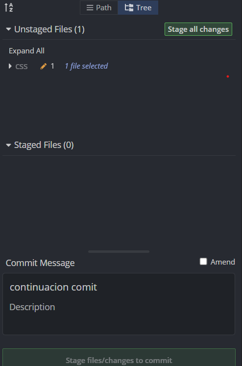
Esto permitirá ver todos los cambios realizados hasta el momento en rojo lo que estaba antes y en verde lo que esta ahora.
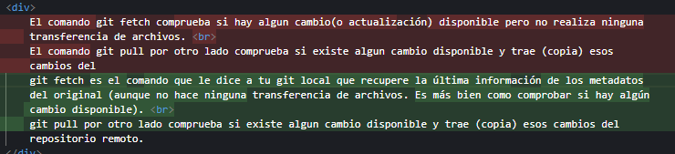
Una vez que estemos contentos con los cambios que hemos realizado podemos hacer un commit para guardarlos. El commit nos dara la opcion de meter un titulo y una descripcción muy util para cuando se trabaja en equipp.
Aparte de esta forma también podemos usar la consola en Gitkraken y poner: git commit -m "Mensaje de commit"
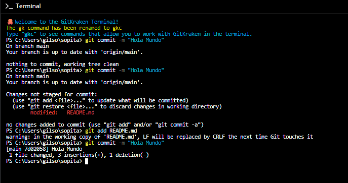
GitKraken permite realizar un pull de manera sencilla (ademas es fácil de encontrar ya que es muy gráfico), para ello debemos ir a la parte superior. Este pull nos dará varias opciones que podemos seleccionar:
-Fetch all: Este comando simplemente recupera los últimos commits del repositorio remoto y los agrega a las ramas de seguimiento remoto de tu repositorio local.
-Pull (fast-forward if possible): Este comando es una combinación de git fetch y git merge. Recupera los últimos commits del repositorio remoto y luego fusiona esos cambios en tu rama local si la fusión es una fusión rápida.
-Pull (fast-forward only): Este comando es similar a git pull (fast-forward if possible), pero solo realizará una fusión rápida si es posible.
-Pull (rebase): Este comando es una alternativa más potente a git pull (fast-forward if possible) . Recupera los últimos commits del repositorio remoto y luego rebasa tu rama local sobre la rama remota. Esto significa que tu rama local se volverá a escribir para incluir los últimos cambios de la rama remota, aplicando los cambios como si los hubieras realizado tú mismo.
-Fetch all: Este comando simplemente recupera los últimos commits del repositorio remoto y los agrega a las ramas de seguimiento remoto de tu repositorio local.
-Pull (fast-forward if possible): Este comando es una combinación de git fetch y git merge. Recupera los últimos commits del repositorio remoto y luego fusiona esos cambios en tu rama local si la fusión es una fusión rápida.
-Pull (fast-forward only): Este comando es similar a git pull (fast-forward if possible), pero solo realizará una fusión rápida si es posible.
-Pull (rebase): Este comando es una alternativa más potente a git pull (fast-forward if possible) . Recupera los últimos commits del repositorio remoto y luego rebasa tu rama local sobre la rama remota. Esto significa que tu rama local se volverá a escribir para incluir los últimos cambios de la rama remota, aplicando los cambios como si los hubieras realizado tú mismo.
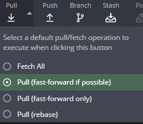
Si queremos también tenemos comandos para hacer pull desde la terminal de Gitkraken, pero son los mismos que git creo. git fetch , git pull , este ultimo comando tiene 3 opciones:
- -f o --force Realiza la combinación de forma forzada, incluso si hay conflictos.
- --ff-only: Solo realiza la combinación de los cambios si es posible hacerlo sin conflictos.
- --rebase : Realiza la combinación de los cambios mediante un rebase.
- -f o --force Realiza la combinación de forma forzada, incluso si hay conflictos.
- --ff-only: Solo realiza la combinación de los cambios si es posible hacerlo sin conflictos.
- --rebase : Realiza la combinación de los cambios mediante un rebase.
La Gestión de ramas es bastante sencilla:
Para crear una rama debemos ir a la parte superior de GitKraken y darle a Branch y escribir el nombre de la rama que queramos poner.
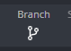
Una vez creada una rama podemos verla en la parte inferior de GitKraken. (Yo pensaba que te lo hacia muy visual al principio y al parecer no.)
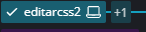
Cuando hagamos cambios en nuestra rama debemos hacer un commit para poder guardarlos. Y después de eso podemos o bien hacer otra rama desde la misma y después hacer un merge de estas dos o podemos hacer un merge a el main.
Aquí se hace un merge entre ramas.
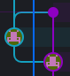
Aquí se hace un merge al main.
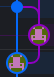
Las ramas son muy visuales y muy útiles para trabajar en equipo. Pero hay que tener cuidado con la nomenclatura ya que como vemos en esta imagen es un lio:
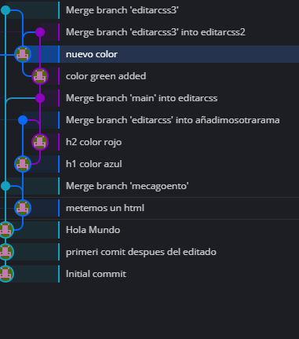
Todo el proceso de las ramas en este video:

La resolución de conflictos en GitKraken es sencilla se puede realizar de 2 formas:
-Manualmente: hay que hacer click en el archivo que tiene el conflicto:
1.Elegir una version del archivo y reemplazarlo.
2.Combinar las versiones conservando los cambios que queramos.
-Automáticamente: Gitkraken intenta resolver los conflictos automáticamente, a la hora de mergear gitkraken mostrara una combinación de los dos archivos.
-Manualmente: hay que hacer click en el archivo que tiene el conflicto:
1.Elegir una version del archivo y reemplazarlo.
2.Combinar las versiones conservando los cambios que queramos.
-Automáticamente: Gitkraken intenta resolver los conflictos automáticamente, a la hora de mergear gitkraken mostrara una combinación de los dos archivos.
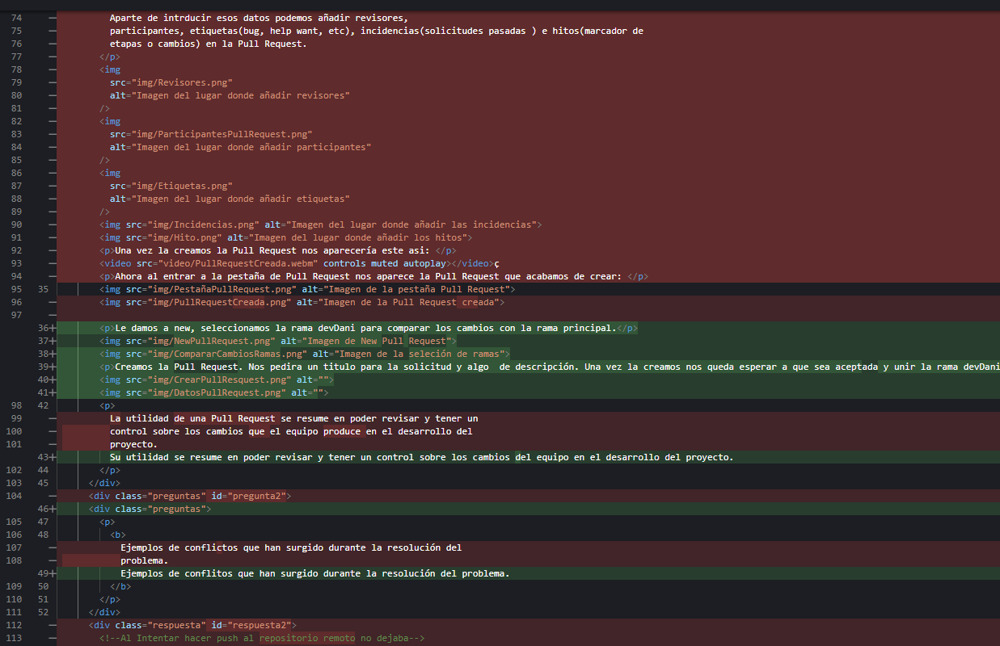